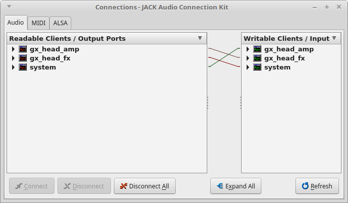

Produção Musical com software livre
Um guia de sobrevivência
Sobre o autor
- Lucas Fialho Zawacki
- Formado em Ciência da Computação pela UFRGS
- Membro do Matehackers
- Trabalhando na Mconf Tecnologia
- Entusiasta do Software e Cultura Livre
Como esta palestra vai funcionar?
Vou apresentar a minha história fazendo música no Linux
No processo vamos explorar o status da música no Linux
Com alguma sorte, vou guiar mais músicos nessa jornada do software livre.
Mas por que ouvir esse cara?
- Um pouco da perspectiva técnica, um pouco da perspectiva criativa
- Gravei vários demos, músicas e projetos com software livre,
- Participo da comunidade há aprox. 10 anos
- Envolvido com projetos de software e cultura livre
- Fui entrevistado pelo site Libre Music Production
YouTube
Twitch
E por que Software Livre?
Linux e Música
Atitude
Não é requisito, mas se você planeja ser um astro do rock então é melhor desenvolver uma atitude rebelde e rejeitar resolutamente softwares populares.
Manual do QtractorStatus do Áudio no Linux
Em minha opinião a situação da música no Linux não é perfeita, mas é muito boa! Quando o assunto é produção musical o cenário é muito interessante e promissor.
- Grande variedade de software livre e gratuito
- Infraestrutura moderna de conexão (JACK) e plugins (LV2, LADSPA)
- Uma comunidade alinhada com os ideais FLOSS
- Uso de padrões bem documentados (mesmo que nem sempre open)
- Suporte aos fluxos de produção mais comuns
- Suporte a uma grande quantidade de interfaces de áudio
Mas então, temos algum problema?
Quais problemas os usuários enfrentavam em 2018?

Algumas conclusões preliminares
Comunidade em si é pequena.
Dificuldades técnicas.
Disponibilidade do Hardware.
Falta dos killer apps ??.
Produção Musical é um assunto confuso e controverso.
Quais problemas os usuários enfrentam em 2020?
Mais algumas conclusões preliminares
Comunidade cresceu de maneira expressiva (8.5x mais posts)
Dificuldades técnicas persistem, mas mudaram um pouco
Disponibilidade de hardware ainda é um problema
Maior variedade de programas disponíveis e alguns mais estabelecidos
Produção Musical é um assunto confuso e controverso
The Linux Audio Mess ?!!?
A gurizada se amarra nuns diagramas...

Diagramas do áudio no Linux (#1)

Diagramas do áudio no Linux (#2)
Diagramas do áudio no Linux (#3)
Diagramas do áudio no Linux (#4)
Diagramas do áudio no Linux (#5)
Diagramas do áudio no Linux (#6)
Diagramas do áudio no Linux (#7)
...
Mas o que você sugere?

O meu diagrama
E ainda podemos dar um toque final...
O meu diagrama (#2)
PROBLEM SOLVED!!1!!1!one!
Mas e o resto?
Iniciativas da comunidade
Minhas iniciativas
Recomendações pt. 1
Uma distro que te ajuda
- KXStudio: Pacotes baseados em Debian/Ubuntu.
- Ubuntu Studio: Distro muito popular baseada em Ubuntu.
- AV Linux: Distro baseada em Debian
Recomendações pt. 2
A questão do Hardware
Muito importante tomar cuidado ao comprar, pois nem todos são compatíveis.
Recomendações pt. 3
Adapte-se, mas saiba quando adaptar
[INSIRA TEXTO AQUI]
Recomendações pt. Final
Liberte sua criatividade!
Mas por onde começar?
JACK 101
O que é o JACK?
Jack Audio Connection Kit
A peça fundamental do áudio profissional no Linux
- Roteamento modular de áudio com baixa latência
- Precisa tomar acesso "exclusivo" da placa de áudio
- Um 'barramento' de áudio entre diferentes aplicativos
- Escreve/lê e redireciona Áudio/MIDI de softwares e hardwares
- Sincroniza e negocia o BPM de diferentes aplicações
Tem esse diagrama...
JACK Audio Connection Kit (#8)
Mas na prática...
Diagrama de Latência
Conexões (#1)

qjackctl com guitarix
Conexões (#2)
qjackctl guitarix, zynaddsubfx, calf delay
Conexões (#3)

Catia guitarix
Conexões (#4)
Catia guitarix, zynaddsubfx, calf delay
Escolha as suas armas
Orquestração / outros instrumentos
- ZynAddSubFX
- Bristol
- Linuxsampler
- Alsa Modular Synth
- QSynth e outros synths